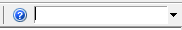
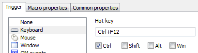
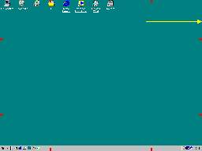
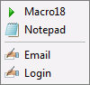
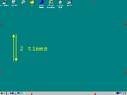

Macro that types text when I press Ctrl+F12
Macro that runs or activates Notepad when I quickly move the mouse to the right screen edge
Macro that automatically closes Abc window
Macro that fills User Id and Password fields in a web page in Internet Explorer
Menu that appears when I move the mouse up-down two times
An "auto-hide" toolbar at the top edge of the screen
See also: video tutorials
Most of the time, the Quick Macros window is hidden. To show it, click the tray icon .
To enter some frequently used commands, you can use dialogs from the code toolbar.
You can also record keys and mouse: click the Record button on the toolbar, or press Ctrl+Shift+Alt+R.
Other commands you have to type directly in the code editor.
To find commands, dialogs and help, use the 'Find help, functions, tools' field on the toolbar. More info.

1. Create new macro. Click the New Macro button on the toolbar. You can type a name for the new macro in the small temporary edit field.

2. Define trigger (event that causes the macro to run). Click the Properties button on the toolbar, and then click Key in the Properties dialog. Click the Hotkey field and press Ctrl and F12 at the same time. Then click OK.

3. Write macro commands. Only single command is required for this example. Click the Text button on the code toolbar. Type your text in the Text dialog. Click OK. The macro will look like this:
key "First line of your text[]Second line"
4. Test. Run Notepad and press Ctrl+F12. The macro will type the text.
1. Create new macro.
2. Define trigger. In the Properties dialog, select Mouse, Right edge, Top (for example).
3. Write macro commands. Only single command is required for this example. Click the "Files, internet" button on the code toolbar, and then select Run Program from the menu. Will appear the Run Program dialog. In the Path field, type notepad.exe, or click the Browse button and find the program file or shortcut. Then select or type window name (for example, Notepad) in the Window field. Window name can be partial. Must match case. Then click OK. The macro will look like this:
run "$system$\notepad.exe" "" "" "" 1 "Notepad"
4. Test. Quickly horizontally move the mouse to the top quarter of the screen right edge. The macro will launch Notepad, or activate it if already running. Launching macros with mouse movements may require some training.

1. Create new macro.
2. Define trigger. In the Properties dialog, select Window. Specify window name and class (use the finder tool, or enter manually). Window name can be partial. Must match case. Click OK, Yes. It inserts one line of code that gets window handle.
3. Write macro commands. There are several ways to close a window: the clo command, press the Esc key, press OK or other button, click it with the mouse. Let's use clo. To enter it, you can use the Window dialog from the code toolbar. The macro will look like this:
int hwnd=TriggerWindow clo hwnd
4. Test. Open the Abc window. When it appears, this macro runs automatically and closes it.
1. Create new macro. Name it "Id and Password".
2. Define trigger. Let's make this macro without a trigger, and run it from a menu. About how to create a menu, read the next example.
3. Write macro commands. It is easy if the id field has focus. If not, the macro must select it. We could use the mouse, but the field will not necessary be at the same location every time. To make the macro independent from the id field location, we can use html element functions. In the code toolbar, locate the Find Html Element dialog. In the dialog, drag the "Drag" picture and drop onto the id field in the web page. When you click the Test button, it must find the id field (you must see black blinking rectangle around it). Click OK. Then open the Html Element Actions dialog, select Set Focus from the list of available actions, and click OK. Then, use the Text dialog to enter id and password, and the Keys dialogs to press Tab (select the password field) and Enter. The macro will look like this example:
Htm el=htm("INPUT" "id" "" "Internet Explorer" 0 0 0x221) el.SetFocus key "myid" key T key "mypassword" key Y
4. Add the macro to a menu. Open the menu (or create new). Drag and drop the "Id and Password" macro from the list to the menu text. It will insert:
Id and Password :mac "Id and Password"
5. Test. Open the web page, run the menu and click "Id and Password" menu item.
Tip: To enter id and password, you also can use this dialog: code toolbar -> Message box, other -> Enter password.
1. Create new menu. Click the small arrow beside the New button, then click New Menu and type a name.
2. Define trigger. In the Properties dialog, click Mouse, and, for example, Up-down, Left. Check the Double checkbox.
3. Add menu items. Each line in menu text adds one menu item to the menu. To add a menu item that runs a macro, drag and drop the macro from the list to the menu text in the editor. Or, just type macro name. To add an item that runs a file, use the Run File dialog from the code toolbar. Or, drag the file from the desktop or Windows Explorer. To add items that execute other commands, use other dialogs from the code toolbar. To add several commands in a single line, separate them with semicolon. To add a separator, type - or |. You can edit item labels (text before :). Menu text and menu itself may look like in this example:
Macro18 :mac "Macro18" Notepad :run "$system$\notepad.exe" - Email :key "my@ema.il" * text.ico Login :key "abcd"; key T ; key "1234"; Y * text.ico

4. Assign icons. Click the Icons button on the toolbar. In the Icons dialog, select an icon from a file (left side), or create and save new icon (right side). In menu text, click the item (line) to which you want to add the icon. In the Icons dialog, click Actions -> Set icon of menu/toolbar item. Then select and assign icons to other items.
5. Test. Quickly vertically move the mouse up-down two times in the left side of the screen. Launching macros by mouse movements may require some training.

1. Create new toolbar. Click the small arrow beside the New button, then click New Toolbar, and type a name.
2. Define trigger. In the Properties dialog, select Window, Active. Drag the "Drag" tool and drop onto the Notepad window. Delete document name (e.g., if the window name is "Untitled - Notepad", leave only " - Notepad").
3. Add buttons. All the same as with popup menus (see the above example).
Now, when you open Notepad, you can see this toolbar attached. You can move the toolbar with the right mouse button, resize with the left button. Right click to view the context menu. Shift+drag to move or delete buttons. Drag and drop a macro, file or Internet link to add it to the toolbar (you can drop onto the editor text or directly onto the toolbar).
1. Create new toolbar. Click menu File -> New -> Templates -> Toolbar Top or Bottom.
2. Define trigger. In the Properties dialog, select Mouse, Top edge, Middle. Check the Slow checkbox. Or, you can assign it "QM file loaded" trigger to run at startup.
3. Add buttons. See the above example.
The toolbar will appear when you move the mouse to the left part of screen top edge.